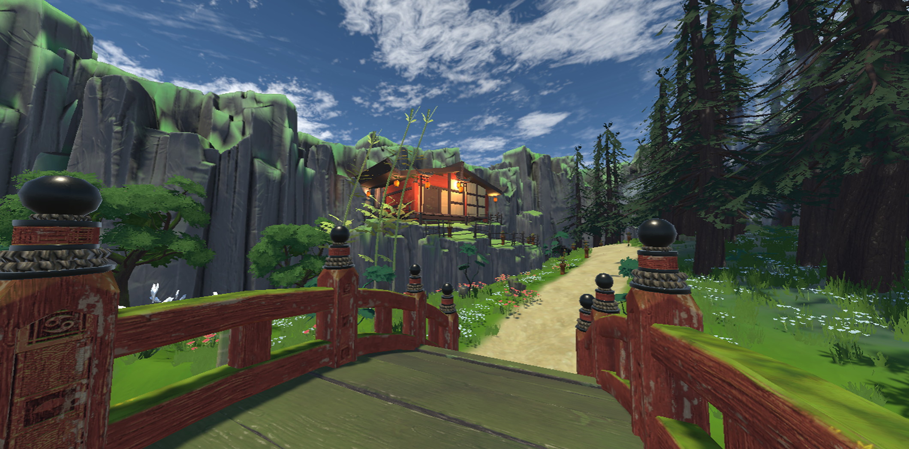
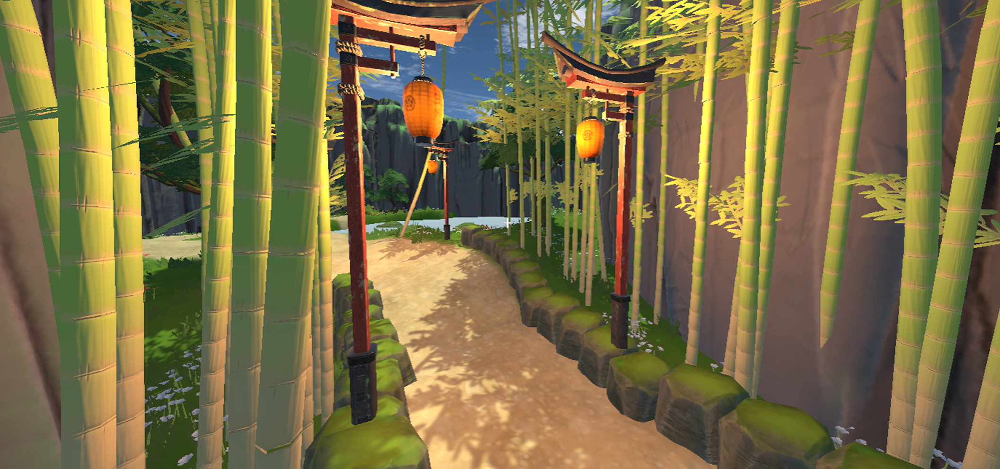
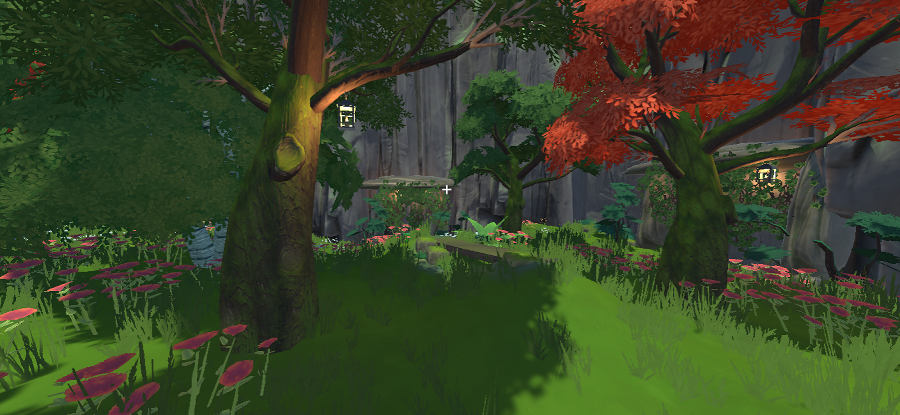

THE HERBAL QUEST
OVERVIEW
PROJECT PERIOD: 15.10.2024 - 13.10.2024
TEAM: 3 People
MY ROLE: Lead Artist
MADE WITH: Unity
PLAY ON itch.io


ABOUT THE PROJECT
The Herbal Quest is a 3D platformer developed during the first semester of my Game Design studies. The game consists of three levels, with me taking responsibility for development of the first level. The 3D assets were sourced from the Unity Asset Store.
CONCEPT
In this first-person 3D platformer, you play as Xiyuan, a Daoist monk who runs a teahouse with his friend. Explore forested mountains and mysterious caves in search of rare herbs and ingredients. Can you gather everything you need without getting yourself into trouble?
